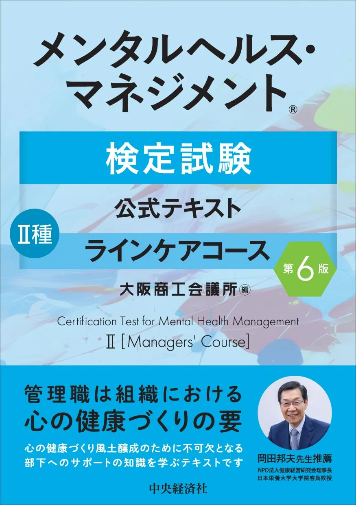

おすすめテキスト3選【2026年度版】
公式第6版·TACスッキリ·サクッとわかるの3冊を比較。7領域50問120分·70点を前提に1冊選びを解説します。
3冊を比較するテキスト
メンタルヘルス・マネジメント検定II種（「2種」とも表記）の過去問を年度別・分野別にまとめています。模試・模擬試験前の出題傾向の確認や、過去問・実践演習・一問一答の中心コンテンツとして使えます。検索と絞り込みで目的の問題を探し、解説ページで正誤と解説を確認できます。
無料演習と併用する問題集・教材セットの比較記事へ。
メンタルヘルス・マネジメント検定II種の過去問・実践演習・一問一答と模試・模擬試験対策を、このサイトでまとめて学習できます。タブから他の演習モードへ移動できます。
全300問・1年度・3分野。キーワード検索と絞り込みで探せます。
| 問 | 分野 | 問題文（抜粋） |
|---|---|---|
| 第1問 | 基礎・役割 | 安全配慮義務に関する次の記述のうち、最も適切なものを一つ選びなさい。 |
| 第2問 | 基礎・役割 | メンタルヘルスケアの「4つのケア」に関する記述として、最も不適切なものを一つ選びなさい。 |
| 第3問 | 基礎・役割 | NIOSHの職業性ストレスモデルに関する次の記述のうち、最も適切なものを一つ選びなさい。 |
| 第4問 | 職場環境・配慮 | 職業性ストレス簡易調査票を用いた仕事のストレス判定図に関する記述として、最も適切なものを一つ選びなさい。 |
| 第5問 | 相談・連携・復職 | 部下から「死にたい」という言葉が出たとき、管理監督者の対応として最も適切なものを一つ選びなさい。 |
| 第6問 | 相談・連携・復職 | 職場復帰支援の第3ステップに該当するものとして、最も適切なものを一つ選びなさい。 |
| 第7問 | 基礎・役割 | 労働安全衛生調査に関する次の記述のうち、最も適切なものを一つ選びなさい。 |
| 第8問 | 基礎・役割 | 過重労働による健康障害防止に関する次の記述のうち、最も不適切なものを一つ選びなさい。 |
| 第9問 | 基礎・役割 | パワーハラスメントの定義に含まれる要素として、最も適切な組み合わせを一つ選びなさい。 |
| 第10問 | 基礎・役割 | ストレスチェック制度に関する次の記述のうち、最も適切なものを一つ選びなさい。 |
| 第11問 | 基礎・役割 | 事業場におけるメンタルヘルスケアの方針・計画策定に関する記述として、最も適切なものを一つ選びなさい。 |
| 第12問 | 基礎・役割 | 管理監督者によるラインケアとして、最も不適切なものを一つ選びなさい。 |
| 第13問 | 基礎・役割 | ストレス反応に関する次の記述のうち、最も適切なものを一つ選びなさい。 |
| 第14問 | 基礎・役割 | うつ病に関する次の記述のうち、最も不適切なものを一つ選びなさい。 |
| 第15問 | 基礎・役割 | 発達障害に関する次の記述のうち、最も適切なものを一つ選びなさい。 |
| 第16問 | 基礎・役割 | 障害者雇用促進法に関する次の記述のうち、最も適切なものを一つ選びなさい。 |
| 第17問 | 職場環境・配慮 | 職場のストレス要因に関する次の記述のうち、最も不適切なものを一つ選びなさい。 |
| 第18問 | 職場環境・配慮 | ラインによる職場環境改善の進め方として、最も適切なものを一つ選びなさい。 |
| 第19問 | 職場環境・配慮 | 職場環境改善の評価に関する記述として、最も適切なものを一つ選びなさい。 |
| 第20問 | 職場環境・配慮 | 部下のメンタルヘルス不調のサインとして、最も不適切なものを一つ選びなさい。 |
| 第21問 | 職場環境・配慮 | 管理監督者が注意すべきストレス要因に関する記述として、最も適切なものを一つ選びなさい。 |
| 第22問 | 職場環境・配慮 | 管理監督者による過重労働防止の対応として、最も適切なものを一つ選びなさい。 |
| 第23問 | 職場環境・配慮 | 部下へのサポートの種類に関する次の記述のうち、最も適切なものを一つ選びなさい。 |
| 第24問 | 職場環境・配慮 | 部下のメンタルヘルスに関する個人情報の取り扱いとして、最も適切なものを一つ選びなさい。 |
| 第25問 | 職場環境・配慮 | 管理監督者自身のメンタルヘルスケアとして、最も不適切なものを一つ選びなさい。 |
| 第26問 | 相談・連携・復職 | 管理監督者が部下の相談を受ける際の基本姿勢として、最も適切なものを一つ選びなさい。 |
| 第27問 | 相談・連携・復職 | 心の不調が発見されにくい理由として、最も適切なものを一つ選びなさい。 |
| 第28問 | 相談・連携・復職 | 管理監督者が部下の話を聴く意義として、最も適切なものを一つ選びなさい。 |
| 第29問 | 相談・連携・復職 | 不調が疑われる部下との面談における傾聴の方法として、最も不適切なものを一つ選びなさい。 |
| 第30問 | 相談・連携・復職 | 部下を専門家へ紹介する際の対応として、最も適切なものを一つ選びなさい。 |
| 第31問 | 相談・連携・復職 | 産業医の役割に関する次の記述のうち、最も適切なものを一つ選びなさい。 |
| 第32問 | 相談・連携・復職 | 社外の相談窓口・支援機関に関する次の記述のうち、最も適切なものを一つ選びなさい。 |
| 第33問 | 相談・連携・復職 | 医療機関の種類と選び方に関する記述として、最も適切なものを一つ選びなさい。 |
| 第34問 | 相談・連携・復職 | 社内外資源との連携に関する記述として、最も不適切なものを一つ選びなさい。 |
| 第35問 | 相談・連携・復職 | 職場復帰支援の第2ステップに関する記述として、最も適切なものを一つ選びなさい。 |
| 第36問 | 相談・連携・復職 | 職場復帰支援における管理監督者の対応として、最も適切なものを一つ選びなさい。 |
| 第37問 | 相談・連携・復職 | 治療と仕事の両立支援に関する記述として、最も適切なものを一つ選びなさい。 |
| 第38問 | 基礎・役割 | 労働者のメンタルヘルスに関連する法的規制の説明として、最も適切なものを一つ選びなさい。 |
| 第39問 | 基礎・役割 | 企業がメンタルヘルスケアに取り組む意義として、最も不適切なものを一つ選びなさい。 |
| 第40問 | 基礎・役割 | 労働時間の管理に関する次の記述のうち、最も適切なものを一つ選びなさい。 |
| 第41問 | 基礎・役割 | 職場でのメンタルヘルス不調に対する正しい態度として、最も適切なものを一つ選びなさい。 |
| 第42問 | 職場環境・配慮 | ストレスへの対処（コーピング）に関する記述として、最も適切なものを一つ選びなさい。 |
| 第43問 | 相談・連携・復職 | 職場復帰支援の第4・5ステップに関する記述として、最も適切なものを一つ選びなさい。 |
| 第44問 | 基礎・役割 | 安全配慮義務に基づく損害賠償が認められる場合、賠償額の算定に含まれないものとして最も適切なものを一つ選… |
| 第45問 | 基礎・役割 | 次のうち、安全配慮義務違反が問われうるケースとして最も適切なものを一つ選びなさい。 |
| 第46問 | 基礎・役割 | 精神障害の労災認定に関する次の記述のうち、最も適切なものを一つ選びなさい。 |
| 第47問 | 基礎・役割 | ストレスチェックの結果に基づく集団分析に関する記述として、最も適切なものを一つ選びなさい。 |
| 第48問 | 基礎・役割 | セクシャルハラスメントに関する次の記述のうち、最も不適切なものを一つ選びなさい。 |
| 第49問 | 基礎・役割 | わが国の労働者のメンタルヘルスに関する現状として、最も適切なものを一つ選びなさい。 |
| 第50問 | 基礎・役割 | メンタルヘルスケアの推進体制として、最も適切なものを一つ選びなさい。 |
| 第51問 | 基礎・役割 | 時間外・休日労働に関する36協定について、最も適切なものを一つ選びなさい。 |
| 第52問 | 基礎・役割 | 仕事の要求度−コントロールモデル（Karasek）に関する記述として、最も適切なものを一つ選びなさい。 |
| 第53問 | 基礎・役割 | ストレッサーとストレス反応に関する記述として、最も適切なものを一つ選びなさい。 |
| 第54問 | 基礎・役割 | 双極性障害（躁うつ病）に関する記述として、最も適切なものを一つ選びなさい。 |
| 第55問 | 基礎・役割 | 統合失調症に関する記述として、最も不適切なものを一つ選びなさい。 |
| 第56問 | 基礎・役割 | 努力−報酬不均衡モデル（Siegrist）に関する記述として、最も適切なものを一つ選びなさい。 |
| 第57問 | 職場環境・配慮 | 作業環境・作業方法に関連するストレス要因として、最も適切なものを一つ選びなさい。 |
| 第58問 | 職場環境・配慮 | 職場のストレス評価に用いられるツールに関する記述として、最も適切なものを一つ選びなさい。 |
| 第59問 | 職場環境・配慮 | 職場環境改善の具体的な取り組みとして、最も不適切なものを一つ選びなさい。 |
| 第60問 | 職場環境・配慮 | 仕事のストレス要因として「役割」に関連するものの説明として、最も適切なものを一つ選びなさい。 |
| 第61問 | 職場環境・配慮 | 「いつもと違う様子」として管理監督者が注意すべき変化として、最も不適切なものを一つ選びなさい。 |
| 第62問 | 職場環境・配慮 | 部下の長時間労働への対応として、管理監督者の行動として最も適切なものを一つ選びなさい。 |
| 第63問 | 職場環境・配慮 | 昇進・異動に伴うストレスに関する記述として、最も適切なものを一つ選びなさい。 |
| 第64問 | 職場環境・配慮 | 労働者の健康情報の取り扱いに関する記述として、最も適切なものを一つ選びなさい。 |
| 第65問 | 職場環境・配慮 | 職場における社会的支援（ソーシャルサポート）に関する記述として、最も適切なものを一つ選びなさい。 |
| 第66問 | 相談・連携・復職 | 積極的傾聴（アクティブリスニング）の技法として、最も不適切なものを一つ選びなさい。 |
| 第67問 | 相談・連携・復職 | うつ病の早期発見に関する記述として、最も適切なものを一つ選びなさい。 |
| 第68問 | 相談・連携・復職 | 自殺念慮のある部下への対応として、最も適切なものを一つ選びなさい。 |
| 第69問 | 相談・連携・復職 | 面談での「繰り返し」の技法に関する記述として、最も適切なものを一つ選びなさい。 |
| 第70問 | 相談・連携・復職 | 管理監督者が部下を医療機関に紹介する際の留意点として、最も適切なものを一つ選びなさい。 |
| 第71問 | 相談・連携・復職 | 衛生管理者の役割に関する記述として、最も適切なものを一つ選びなさい。 |
| 第72問 | 相談・連携・復職 | EAP（従業員支援プログラム）に関する記述として、最も適切なものを一つ選びなさい。 |
| 第73問 | 相談・連携・復職 | 精神科と心療内科の違いに関する記述として、最も適切なものを一つ選びなさい。 |
| 第74問 | 相談・連携・復職 | 職場復帰支援において「試し出勤制度」を活用する際の留意点として、最も適切なものを一つ選びなさい。 |
| 第75問 | 相談・連携・復職 | 職場復帰後のフォローアップに関する記述として、最も適切なものを一つ選びなさい。 |
| 第76問 | 相談・連携・復職 | 職場復帰支援における個人情報・プライバシー保護に関する記述として、最も適切なものを一つ選びなさい。 |
| 第77問 | 相談・連携・復職 | 両立支援における事業者・管理監督者の役割として、最も適切なものを一つ選びなさい。 |
| 第78問 | 基礎・役割 | 管理監督者がラインケアを実践するうえで最も重要な姿勢として、最も適切なものを一つ選びなさい。 |
| 第79問 | 基礎・役割 | 「労働者の心の健康の保持増進のための指針」に関する記述として、最も適切なものを一つ選びなさい。 |
| 第80問 | 基礎・役割 | 長時間労働者への医師の面接指導に関する記述として、最も適切なものを一つ選びなさい。 |
| 第81問 | 基礎・役割 | ストレスチェック結果の取り扱いに関して、最も適切なものを一つ選びなさい。 |
| 第82問 | 基礎・役割 | コルチゾールとアドレナリンに関する記述として、最も適切なものを一つ選びなさい。 |
| 第83問 | 基礎・役割 | パニック障害に関する記述として、最も適切なものを一つ選びなさい。 |
| 第84問 | 基礎・役割 | ADHDのある労働者への職場での配慮として、最も適切なものを一つ選びなさい。 |
| 第85問 | 職場環境・配慮 | 集団分析の結果を職場環境改善に活用する際の手順として、最も適切なものを一つ選びなさい。 |
| 第86問 | 職場環境・配慮 | 職場環境改善におけるPDCAサイクルの「C（Check）」に該当する活動として、最も適切なものを一つ選… |
| 第87問 | 職場環境・配慮 | 次の部下の様子のうち、メンタルヘルス不調のサインとして最も注意が必要なものを一つ選びなさい。 |
| 第88問 | 職場環境・配慮 | 管理監督者自身のストレス対処として、最も適切なものを一つ選びなさい。 |
| 第89問 | 相談・連携・復職 | 部下が業務中に突然泣き出した場合の管理監督者の初期対応として、最も適切なものを一つ選びなさい。 |
| 第90問 | 相談・連携・復職 | 管理監督者が「相談しやすい職場環境」をつくるための行動として、最も不適切なものを一つ選びなさい。 |
| 第91問 | 相談・連携・復職 | 保健師・看護師の職場での役割として、最も適切なものを一つ選びなさい。 |
| 第92問 | 相談・連携・復職 | 主治医と産業医の役割の違いに関する記述として、最も適切なものを一つ選びなさい。 |
| 第93問 | 相談・連携・復職 | 「心の健康問題により休業した労働者の職場復帰支援の手引き」に関する記述として、最も適切なものを一つ選び… |
| 第94問 | 相談・連携・復職 | 復職後に再燃・再発のリスクが高まる時期として、最も適切なものを一つ選びなさい。 |
| 第95問 | 基礎・役割 | 不法行為責任（民法709条）に基づく損害賠償請求が成立するための要件として、最も適切なものを一つ選びな… |
| 第96問 | 基礎・役割 | 障害者差別解消法における「合理的配慮」に関する記述として、最も適切なものを一つ選びなさい。 |
| 第97問 | 職場環境・配慮 | テレワーク・在宅勤務に特有のストレス要因として、最も適切なものを一つ選びなさい。 |
| 第98問 | 職場環境・配慮 | リラクセーション法として用いられる「自律訓練法」に関する記述として、最も適切なものを一つ選びなさい。 |
| 第99問 | 相談・連携・復職 | 相談場面における「要約」の技法として、最も適切なものを一つ選びなさい。 |
| 第100問 | 相談・連携・復職 | 精神保健福祉センターの役割として、最も適切なものを一つ選びなさい。 |
| 第101問 | 基礎・役割 | メンタルヘルスケアの「プレゼンティーイズム」に関する記述として、最も適切なものを一つ選びなさい。 |
| 第102問 | 基礎・役割 | 企業がメンタルヘルスケアに取り組む「経営上の意義」として、最も不適切なものを一つ選びなさい。 |
| 第103問 | 基礎・役割 | 4つのケアのうち「事業場内産業保健スタッフ等によるケア」の内容として、最も適切なものを一つ選びなさい。 |
| 第104問 | 基礎・役割 | 管理監督者が部下の不調に気づいたときの対応の流れとして、最も適切なものを一つ選びなさい。 |
| 第105問 | 基礎・役割 | 職場でのハラスメント防止に向けた事業主の取り組みとして、最も不適切なものを一つ選びなさい。 |
| 第106問 | 基礎・役割 | 管理監督者の労働時間管理に関する記述として、最も適切なものを一つ選びなさい。 |
| 第107問 | 基礎・役割 | 「心の健康づくり計画」に含めるべき事項として、最も不適切なものを一つ選びなさい。 |
| 第108問 | 基礎・役割 | 労働契約法第5条に関する記述として、最も適切なものを一つ選びなさい。 |
| 第109問 | 基礎・役割 | メンタルヘルス不調に対するスティグマ（偏見）に関する記述として、最も適切なものを一つ選びなさい。 |
| 第110問 | 基礎・役割 | メンタルヘルスに関する正しい知識の普及啓発として、最も適切なものを一つ選びなさい。 |
| 第111問 | 基礎・役割 | 心身症に関する記述として、最も適切なものを一つ選びなさい。 |
| 第112問 | 基礎・役割 | 精神障害者保健福祉手帳に関する記述として、最も適切なものを一つ選びなさい。 |
| 第113問 | 職場環境・配慮 | 参加型職場環境改善（ワークショップ方式）の特徴として、最も適切なものを一つ選びなさい。 |
| 第114問 | 職場環境・配慮 | ストレスチェックの集団分析結果を用いた職場環境改善の評価について、最も適切なものを一つ選びなさい。 |
| 第115問 | 職場環境・配慮 | 「仕事の量−コントロール判定図」の活用方法として、最も適切なものを一つ選びなさい。 |
| 第116問 | 職場環境・配慮 | 認知行動療法（CBT）に関する記述として、最も適切なものを一つ選びなさい。 |
| 第117問 | 職場環境・配慮 | 「職場による支援」として管理監督者が行える具体的なサポートとして、最も不適切なものを一つ選びなさい。 |
| 第118問 | 職場環境・配慮 | 職場における「人間関係のストレス」に対する管理監督者の予防的取り組みとして、最も適切なものを一つ選びな… |
| 第119問 | 職場環境・配慮 | 職場復帰した労働者の個人情報管理として、最も適切なものを一つ選びなさい。 |
| 第120問 | 職場環境・配慮 | 管理監督者がバーンアウト（燃え尽き症候群）を予防するために重要なこととして、最も適切なものを一つ選びな… |
| 第121問 | 相談・連携・復職 | 部下が突然「もう消えてしまいたい」と話したときの初期対応として、最も適切なものを一つ選びなさい。 |
| 第122問 | 相談・連携・復職 | 「事例性」と「疾病性」の違いに関する記述として、最も適切なものを一つ選びなさい。 |
| 第123問 | 相談・連携・復職 | 管理監督者が部下の相談を受ける際に「解決策を与えすぎること」の問題点として、最も適切なものを一つ選びな… |
| 第124問 | 相談・連携・復職 | 産業医への相談・連携に関する記述として、最も適切なものを一つ選びなさい。 |
| 第125問 | 相談・連携・復職 | 職場復帰支援における関係者間の情報共有の原則として、最も適切なものを一つ選びなさい。 |
| 第126問 | 相談・連携・復職 | 職場のメンタルヘルス不調者を医療機関に紹介する際の注意点として、最も適切なものを一つ選びなさい。 |
| 第127問 | 相談・連携・復職 | 職場復帰支援の第1ステップ（病気休業開始・療養）における事業者・管理監督者の対応として、最も適切なもの… |
| 第128問 | 相談・連携・復職 | 主治医から「職場復帰可能」との診断書が提出された場合の対応として、最も適切なものを一つ選びなさい。 |
| 第129問 | 相談・連携・復職 | がん治療中の労働者への両立支援として、最も適切なものを一つ選びなさい。 |
| 第130問 | 基礎・役割 | 「労働安全衛生調査」におけるストレスの原因として上位に挙げられるものの組み合わせとして、最も適切なもの… |
| 第131問 | 職場環境・配慮 | 「過重労働による健康障害防止のための総合対策」における事業者の取り組みとして、最も適切なものを一つ選び… |
| 第132問 | 相談・連携・復職 | 職場復帰支援プランに含める内容として、最も適切なものを一つ選びなさい。 |
| 第133問 | 基礎・役割 | 使用者の安全配慮義務における「予見可能性」に関する記述として、最も適切なものを一つ選びなさい。 |
| 第134問 | 基礎・役割 | 次のうち、安全配慮義務に関連する法的責任の種類として、最も適切な組み合わせを一つ選びなさい。 |
| 第135問 | 基礎・役割 | 過労死等防止対策推進法に関する記述として、最も適切なものを一つ選びなさい。 |
| 第136問 | 基礎・役割 | 「2か月ないし6か月間の時間外・休日労働の月平均が80時間を超えている」ことが、過労死の労災認定の目安… |
| 第137問 | 基礎・役割 | メンタルヘルス対策を推進する企業の「社会的意義」として、最も適切なものを一つ選びなさい。 |
| 第138問 | 基礎・役割 | 衛生委員会のメンタルヘルスケアにおける役割として、最も適切なものを一つ選びなさい。 |
| 第139問 | 基礎・役割 | 「ストレスチェック制度の実施計画」を策定する際に含めるべき事項として、最も適切なものを一つ選びなさい。 |
| 第140問 | 基礎・役割 | 管理監督者が「職場環境の把握と改善」を行う際の手順として、最も適切なものを一つ選びなさい。 |
| 第141問 | 基礎・役割 | 管理監督者による「ラインによるケア」において、最も重要な役割として位置づけられるものを一つ選びなさい。 |
| 第142問 | 基礎・役割 | 「職業性ストレスモデル」における「緩衝要因」として、最も適切なものを一つ選びなさい。 |
| 第143問 | 基礎・役割 | 職場のストレス要因のうち「仕事の要求度」に含まれるものとして、最も適切なものを一つ選びなさい。 |
| 第144問 | 基礎・役割 | 障害者雇用促進法における「法定雇用率」に関する記述として、最も適切なものを一つ選びなさい。 |
| 第145問 | 基礎・役割 | 障害者差別解消法における「不当な差別的取り扱いの禁止」の説明として、最も適切なものを一つ選びなさい。 |
| 第146問 | 職場環境・配慮 | 職場の「対人関係」に関するストレス要因として、最も適切なものを一つ選びなさい。 |
| 第147問 | 職場環境・配慮 | 「新職業性ストレス簡易調査票」が従来の職業性ストレス簡易調査票と異なる点として、最も適切なものを一つ選… |
| 第148問 | 職場環境・配慮 | 職場環境改善を実施する際の「優先順位のつけ方」として、最も適切なものを一つ選びなさい。 |
| 第149問 | 職場環境・配慮 | 「メンタルヘルスアクションチェックリスト」の使い方として、最も適切なものを一つ選びなさい。 |
| 第150問 | 職場環境・配慮 | 部下の「身体的なストレスサイン」として、最も適切なものを一つ選びなさい。 |
| 第151問 | 職場環境・配慮 | 「職場でのいつもと違う様子」の観察において、管理監督者として最も重要な姿勢を一つ選びなさい。 |
| 第152問 | 職場環境・配慮 | 部下が「職場異動」を経験した直後の管理監督者の対応として、最も適切なものを一つ選びなさい。 |
| 第153問 | 職場環境・配慮 | 「タイプA行動パターン」を持つ労働者への対応として、最も適切なものを一つ選びなさい。 |
| 第154問 | 職場環境・配慮 | 不調が疑われる部下への「職場による支援」として、最も適切なものを一つ選びなさい。 |
| 第155問 | 職場環境・配慮 | 「道具的サポート」の具体例として、最も適切なものを一つ選びなさい。 |
| 第156問 | 相談・連携・復職 | 相談場面で管理監督者が避けるべき言動として、最も不適切なものを一つ選びなさい。 |
| 第157問 | 相談・連携・復職 | 「オープン・クエスチョン」と「クローズド・クエスチョン」に関する記述として、最も適切なものを一つ選びな… |
| 第158問 | 相談・連携・復職 | メンタルヘルス不調の「早期発見」が重要な理由として、最も適切なものを一つ選びなさい。 |
| 第159問 | 相談・連携・復職 | うつ病の「仮面うつ病」に関する記述として、最も適切なものを一つ選びなさい。 |
| 第160問 | 相談・連携・復職 | 面談で部下が「長い沈黙」をした場合の管理監督者の対応として、最も適切なものを一つ選びなさい。 |
| 第161問 | 相談・連携・復職 | 管理監督者が部下の相談を受けた後の守秘義務と情報共有の判断として、最も適切なものを一つ選びなさい。 |
| 第162問 | 相談・連携・復職 | 部下が「精神科・心療内科への受診」を強く拒否している場合の対応として、最も適切なものを一つ選びなさい。 |
| 第163問 | 相談・連携・復職 | 産業医への「事例相談」を行う際の注意点として、最も適切なものを一つ選びなさい。 |
| 第164問 | 相談・連携・復職 | 産業医の「勧告権」に関する記述として、最も適切なものを一つ選びなさい。 |
| 第165問 | 相談・連携・復職 | 「心の健康相談員」として社内で機能できる人材として、最も適切なものを一つ選びなさい。 |
| 第166問 | 相談・連携・復職 | 「地域産業保健センター（地さんぽ）」の主な対象事業場として、最も適切なものを一つ選びなさい。 |
| 第167問 | 相談・連携・復職 | 「こころの耳」（厚生労働省）に関する記述として、最も適切なものを一つ選びなさい。 |
| 第168問 | 相談・連携・復職 | 「デイケア（精神科デイケア）」に関する記述として、最も適切なものを一つ選びなさい。 |
| 第169問 | 相談・連携・復職 | 職場復帰を目指す休職者に対して「リワーク支援」を提供している機関として、最も適切なものを一つ選びなさい。 |
| 第170問 | 相談・連携・復職 | 「産業保健総合支援センター（さんぽセンター）」が提供するサービスとして、最も適切なものを一つ選びなさい。 |
| 第171問 | 相談・連携・復職 | 職場復帰支援において主治医と産業医が連携する際の基本的な考え方として、最も適切なものを一つ選びなさい。 |
| 第172問 | 相談・連携・復職 | 職場復帰支援プランの作成にあたって考慮すべき事項として、最も不適切なものを一つ選びなさい。 |
| 第173問 | 相談・連携・復職 | 復職後に「再燃・再発」を防ぐために重要な取り組みとして、最も適切なものを一つ選びなさい。 |
| 第174問 | 相談・連携・復職 | 復職後のフォローアップ面談で管理監督者が確認すべき事項として、最も適切なものを一つ選びなさい。 |
| 第175問 | 相談・連携・復職 | 復職者への業務付与における「段階的な職場復帰」の原則として、最も適切なものを一つ選びなさい。 |
| 第176問 | 基礎・役割 | メンタルヘルスケアへの投資効果（ROI）に関する記述として、最も適切なものを一つ選びなさい。 |
| 第177問 | 基礎・役割 | 職場のメンタルヘルス問題の現状として、最も不適切なものを一つ選びなさい。 |
| 第178問 | 基礎・役割 | 「債務不履行責任」と「不法行為責任」の違いとして、最も適切なものを一つ選びなさい。 |
| 第179問 | 基礎・役割 | パワーハラスメントの6類型に含まれないものとして、最も適切なものを一つ選びなさい。 |
| 第180問 | 基礎・役割 | ストレスチェックの「実施者」として認められる者の組み合わせとして、最も適切なものを一つ選びなさい。 |
| 第181問 | 基礎・役割 | 「勤務間インターバル制度」に関する記述として、最も適切なものを一つ選びなさい。 |
| 第182問 | 基礎・役割 | 「認知的評価」のストレスプロセスにおける役割として、最も適切なものを一つ選びなさい。 |
| 第183問 | 基礎・役割 | 適応障害に関する記述として、最も適切なものを一つ選びなさい。 |
| 第184問 | 職場環境・配慮 | 職場環境改善の「プロセス評価」の内容として、最も適切なものを一つ選びなさい。 |
| 第185問 | 職場環境・配慮 | 「ワーク・ライフ・バランス」の推進と過重労働防止の関係として、最も適切なものを一つ選びなさい。 |
| 第186問 | 職場環境・配慮 | 「プライバシーマーク制度」に関する記述として、最も適切なものを一つ選びなさい。 |
| 第187問 | 職場環境・配慮 | 管理監督者が「ストレスに気づく」ためのセルフモニタリングとして、最も適切なものを一つ選びなさい。 |
| 第188問 | 相談・連携・復職 | 管理監督者が「話を聴く」ことで得られる効果として、最も不適切なものを一つ選びなさい。 |
| 第189問 | 相談・連携・復職 | 部下が「自殺未遂」をした後の職場復帰支援として、最も適切なものを一つ選びなさい。 |
| 第190問 | 相談・連携・復職 | 「ゲートキーパー」の役割として、最も適切なものを一つ選びなさい。 |
| 第191問 | 相談・連携・復職 | 職場復帰支援の各ステップと「主な実施内容」の組み合わせとして、最も適切なものを一つ選びなさい。 |
| 第192問 | 相談・連携・復職 | 「職場復帰支援プラン」に記載すべき内容として、最も不適切なものを一つ選びなさい。 |
| 第193問 | 基礎・役割 | ストレスチェックの「高ストレス者」の定義として、最も適切なものを一つ選びなさい。 |
| 第194問 | 基礎・役割 | ストレスチェックの受検について、最も適切なものを一つ選びなさい。 |
| 第195問 | 基礎・役割 | 「一次予防・二次予防・三次予防」のメンタルヘルスケアにおける意味として、最も適切なものを一つ選びなさい。 |
| 第196問 | 基礎・役割 | メンタルヘルスケアにおける「セルフケア」の内容として、最も不適切なものを一つ選びなさい。 |
| 第197問 | 基礎・役割 | 「五大疾病」に含まれるものとして、最も適切なものを一つ選びなさい。 |
| 第198問 | 基礎・役割 | メンタルヘルス不調による経済的損失に関する記述として、最も適切なものを一つ選びなさい。 |
| 第199問 | 基礎・役割 | 労働安全衛生法と労働契約法の関係として、最も適切なものを一つ選びなさい。 |
| 第200問 | 基礎・役割 | ハラスメントが発生した場合の事後対応として、最も適切なものを一つ選びなさい。 |
| 第201問 | 基礎・役割 | 「インターバル規制」が目指すものとして、最も適切なものを一つ選びなさい。 |
| 第202問 | 基礎・役割 | 業務上の「心理的負荷評価表」に関する記述として、最も適切なものを一つ選びなさい。 |
| 第203問 | 基礎・役割 | 「ラインケア研修」で管理監督者が学ぶべき内容として、最も適切なものを一つ選びなさい。 |
| 第204問 | 基礎・役割 | メンタルヘルスケア推進のための「教育研修・情報提供」として、最も適切なものを一つ選びなさい。 |
| 第205問 | 基礎・役割 | 「ストレス対処行動（コーピング）」の分類として、最も適切なものを一つ選びなさい。 |
| 第206問 | 基礎・役割 | 慢性的なストレスが引き起こす健康障害として、最も不適切なものを一つ選びなさい。 |
| 第207問 | 基礎・役割 | 管理監督者が職場でメンタルヘルス不調の部下と接する際の基本的姿勢として、最も適切なものを一つ選びなさい。 |
| 第208問 | 基礎・役割 | 「アルコール依存症」に関する記述として、最も適切なものを一つ選びなさい。 |
| 第209問 | 基礎・役割 | 自閉スペクトラム症（ASD）の特性として、最も適切なものを一つ選びなさい。 |
| 第210問 | 基礎・役割 | 過敏性腸症候群（IBS）に関する記述として、最も適切なものを一つ選びなさい。 |
| 第211問 | 基礎・役割 | 「障害者職場定着支援奨励金」に関する記述として、最も適切なものを一つ選びなさい。 |
| 第212問 | 職場環境・配慮 | 「仕事のコントロール（裁量度）」が低い職場環境の特徴として、最も適切なものを一つ選びなさい。 |
| 第213問 | 職場環境・配慮 | 「組織風土」がメンタルヘルスに与える影響として、最も適切なものを一つ選びなさい。 |
| 第214問 | 職場環境・配慮 | 「職業性ストレス簡易調査票」の構成として、最も適切なものを一つ選びなさい。 |
| 第215問 | 職場環境・配慮 | 職場環境改善の評価指標として活用できるものの組み合わせとして、最も適切なものを一つ選びなさい。 |
| 第216問 | 職場環境・配慮 | 「職場環境改善計画」の立案において重要なこととして、最も適切なものを一つ選びなさい。 |
| 第217問 | 職場環境・配慮 | 「行動面」のストレスサインとして、最も適切なものを一つ選びなさい。 |
| 第218問 | 職場環境・配慮 | 「役割ストレス」の予防として、管理監督者が行える取り組みとして、最も適切なものを一つ選びなさい。 |
| 第219問 | 職場環境・配慮 | 「マインドフルネス」のストレス対処における説明として、最も適切なものを一つ選びなさい。 |
| 第220問 | 職場環境・配慮 | 「ソーシャルサポートの希求（求める）」コーピングとして、最も適切なものを一つ選びなさい。 |
| 第221問 | 職場環境・配慮 | 「裁量労働制」下での健康管理に関する記述として、最も適切なものを一つ選びなさい。 |
| 第222問 | 職場環境・配慮 | 部下の休職理由を同僚に説明する際の適切な対応として、最も適切なものを一つ選びなさい。 |
| 第223問 | 職場環境・配慮 | 管理監督者が「燃え尽き（バーンアウト）」に至るプロセスとして、最も適切なものを一つ選びなさい。 |
| 第224問 | 職場環境・配慮 | 「情報的サポート」の具体例として、最も適切なものを一つ選びなさい。 |
| 第225問 | 相談・連携・復職 | 「非言語コミュニケーション」が相談場面で重要な理由として、最も適切なものを一つ選びなさい。 |
| 第226問 | 相談・連携・復職 | 「事例性」に基づく管理監督者の対応の利点として、最も適切なものを一つ選びなさい。 |
| 第227問 | 相談・連携・復職 | 職場での「早期発見」のための観察ポイントとして、最も適切なものを一つ選びなさい。 |
| 第228問 | 相談・連携・復職 | 「相談しやすい職場」に必要な要素として、最も適切なものを一つ選びなさい。 |
| 第229問 | 相談・連携・復職 | 「共感的理解」の説明として、最も適切なものを一つ選びなさい。 |
| 第230問 | 相談・連携・復職 | 自殺防止の観点から管理監督者が知っておくべき「警告サイン」として、最も適切なものを一つ選びなさい。 |
| 第231問 | 相談・連携・復職 | 「心の健康問題を持つ部下」を産業医に面談させる際の手順として、最も適切なものを一つ選びなさい。 |
| 第232問 | 相談・連携・復職 | 「産業カウンセラー」の職場での役割として、最も適切なものを一つ選びなさい。 |
| 第233問 | 相談・連携・復職 | 「公認心理師」に関する記述として、最も適切なものを一つ選びなさい。 |
| 第234問 | 相談・連携・復職 | 「働く人の悩みホットライン」の特徴として、最も適切なものを一つ選びなさい。 |
| 第235問 | 相談・連携・復職 | 「障害者就業・生活支援センター」の役割として、最も適切なものを一つ選びなさい。 |
| 第236問 | 相談・連携・復職 | うつ病が疑われる部下に医療機関受診を勧める際の説明として、最も適切なものを一つ選びなさい。 |
| 第237問 | 相談・連携・復職 | 「訪問看護」のメンタルヘルス分野での役割として、最も適切なものを一つ選びなさい。 |
| 第238問 | 相談・連携・復職 | 「産業保健チーム」の連携における管理監督者の役割として、最も適切なものを一つ選びなさい。 |
| 第239問 | 相談・連携・復職 | 職場復帰支援の「管理監督者の役割」として、最も適切なものを一つ選びなさい。 |
| 第240問 | 相談・連携・復職 | 「時間単位の年次有給休暇」の両立支援における活用方法として、最も適切なものを一つ選びなさい。 |
| 第241問 | 相談・連携・復職 | 「短時間勤務制度」の両立支援における位置づけとして、最も適切なものを一つ選びなさい。 |
| 第242問 | 相談・連携・復職 | 復職後のフォローアップにおける「再発のサイン」として、最も適切なものを一つ選びなさい。 |
| 第243問 | 相談・連携・復職 | 復職者の「職場への受け入れ準備」として管理監督者が行うべきことして、最も適切なものを一つ選びなさい。 |
| 第244問 | 基礎・役割 | ストレスチェック結果の「事業者への提供」に関する記述として、最も適切なものを一つ選びなさい。 |
| 第245問 | 基礎・役割 | 「事業場外資源によるケア」として活用できるものとして、最も適切なものを一つ選びなさい。 |
| 第246問 | 基礎・役割 | 「使用者責任」（民法715条）に関する記述として、最も適切なものを一つ選びなさい。 |
| 第247問 | 基礎・役割 | 「マタニティハラスメント（マタハラ）」に関する記述として、最も適切なものを一つ選びなさい。 |
| 第248問 | 基礎・役割 | 管理監督者が「業務上の配慮」として行える対応として、最も適切なものを一つ選びなさい。 |
| 第249問 | 基礎・役割 | メンタルヘルスケアの推進状況を「評価・見直し」する際に参照すべき情報として、最も適切なものを一つ選びな… |
| 第250問 | 基礎・役割 | 「業務起因性」の認定に関する記述として、最も適切なものを一つ選びなさい。 |
| 第251問 | 基礎・役割 | 「ワーク・エンゲイジメント」を高める職場資源として、最も適切なものを一つ選びなさい。 |
| 第252問 | 基礎・役割 | 「ストレス反応の個人差」が生じる要因として、最も適切なものを一つ選びなさい。 |
| 第253問 | 基礎・役割 | 「睡眠障害」とメンタルヘルスの関係として、最も適切なものを一つ選びなさい。 |
| 第254問 | 基礎・役割 | うつ病に対する誤った偏見（スティグマ）として、最も不適切なものを一つ選びなさい。 |
| 第255問 | 基礎・役割 | 「精神障害者保健福祉手帳」の等級に関する記述として、最も適切なものを一つ選びなさい。 |
| 第256問 | 職場環境・配慮 | 「職場の物理的環境」がストレスに与える影響として、最も適切なものを一つ選びなさい。 |
| 第257問 | 職場環境・配慮 | 「職場環境等の把握と改善」における「定性的評価」の方法として、最も適切なものを一つ選びなさい。 |
| 第258問 | 職場環境・配慮 | 「コミュニケーションの改善」が職場環境改善として重要な理由として、最も適切なものを一つ選びなさい。 |
| 第259問 | 職場環境・配慮 | 「職場環境改善の継続的な取り組み」で最も重要なこととして、最も適切なものを一つ選びなさい。 |
| 第260問 | 職場環境・配慮 | 部下のストレスサインに気づいた際の「最初の声かけ」として、最も適切なものを一つ選びなさい。 |
| 第261問 | 職場環境・配慮 | 「職場の人間関係」がストレス要因となる具体的な状況として、最も不適切なものを一つ選びなさい。 |
| 第262問 | 職場環境・配慮 | 「リラクセーション法」として職場でも活用できるものとして、最も適切な組み合わせを一つ選びなさい。 |
| 第263問 | 職場環境・配慮 | 「36協定の特別条項」に関する記述として、最も適切なものを一つ選びなさい。 |
| 第264問 | 職場環境・配慮 | 「評価的サポート」の具体例として、最も適切なものを一つ選びなさい。 |
| 第265問 | 職場環境・配慮 | 「要配慮個人情報」に関する記述として、最も適切なものを一つ選びなさい。 |
| 第266問 | 職場環境・配慮 | 管理監督者が「産業医・保健師に自分自身について相談する」ことに関する記述として、最も適切なものを一つ選… |
| 第267問 | 相談・連携・復職 | 「ジョハリの窓」を職場のコミュニケーションに応用した説明として、最も適切なものを一つ選びなさい。 |
| 第268問 | 相談・連携・復職 | 「複数のサインの組み合わせ」による早期発見について、最も適切なものを一つ選びなさい。 |
| 第269問 | 相談・連携・復職 | 管理監督者が話を聴く際の「限界の認識」について、最も適切なものを一つ選びなさい。 |
| 第270問 | 相談・連携・復職 | 相談面談の「場所・環境設定」として、最も適切なものを一つ選びなさい。 |
| 第271問 | 相談・連携・復職 | 「危機介入」において管理監督者が最優先すべきこととして、最も適切なものを一つ選びなさい。 |
| 第272問 | 相談・連携・復職 | 「かかりつけ医（内科等）」をメンタルヘルス不調の入口として活用する利点として、最も適切なものを一つ選び… |
| 第273問 | 相談・連携・復職 | 「産業保健スタッフの守秘義務」に関する記述として、最も適切なものを一つ選びなさい。 |
| 第274問 | 相談・連携・復職 | 「外部EAP」の特徴として最も適切なものを一つ選びなさい。 |
| 第275問 | 相談・連携・復職 | 「入院治療」が必要と考えられる状況として、最も適切なものを一つ選びなさい。 |
| 第276問 | 相談・連携・復職 | 「情報提供依頼書」を主治医に送付する際の留意点として、最も適切なものを一つ選びなさい。 |
| 第277問 | 相談・連携・復職 | 職場復帰後に「業務負荷を段階的に増やす」際の原則として、最も適切なものを一つ選びなさい。 |
| 第278問 | 相談・連携・復職 | 「傷病手当金」に関する記述として、最も適切なものを一つ選びなさい。 |
| 第279問 | 相談・連携・復職 | 「最終的な職場復帰の決定」（第4ステップ）で確認すべき事項として、最も適切なものを一つ選びなさい。 |
| 第280問 | 相談・連携・復職 | 復職後に「同僚への説明」を行う際のポイントとして、最も適切なものを一つ選びなさい。 |
| 第281問 | 基礎・役割 | 「過労死等防止啓発月間」として定められている月として、最も適切なものを一つ選びなさい。 |
| 第282問 | 基礎・役割 | 「職場における心の健康づくり」において、労働者が行うセルフケアとして、最も適切なものを一つ選びなさい。 |
| 第283問 | 基礎・役割 | 「バーンアウト（燃え尽き症候群）」の特徴として、最も適切なものを一つ選びなさい。 |
| 第284問 | 基礎・役割 | 「急性ストレス反応」として見られる身体的変化として、最も適切なものを一つ選びなさい。 |
| 第285問 | 職場環境・配慮 | 「交替勤務・夜勤」がメンタルヘルスに与える影響として、最も適切なものを一つ選びなさい。 |
| 第286問 | 職場環境・配慮 | 「職業性ストレス簡易調査票」の活用場面として、最も適切なものを一つ選びなさい。 |
| 第287問 | 職場環境・配慮 | 「業務パフォーマンスの低下」がメンタルヘルス不調のサインとなりうる状況として、最も適切なものを一つ選び… |
| 第288問 | 職場環境・配慮 | 「漸進的筋弛緩法」の説明として、最も適切なものを一つ選びなさい。 |
| 第289問 | 相談・連携・復職 | 相談場面で部下が「話すのをためらっている」様子を見せた場合の対応として、最も適切なものを一つ選びなさい。 |
| 第290問 | 相談・連携・復職 | 「職場でのメンタルヘルス不調の見えにくさ」に対して管理監督者ができる取り組みとして、最も適切なものを一… |
| 第291問 | 相談・連携・復職 | 「産業保健スタッフとの連携」において管理監督者が提供できる情報として、最も適切なものを一つ選びなさい。 |
| 第292問 | 相談・連携・復職 | 「自助グループ（セルフヘルプグループ）」のメンタルヘルス支援における役割として、最も適切なものを一つ選… |
| 第293問 | 相談・連携・復職 | 「休業期間の上限」と職場復帰支援の関係として、最も適切なものを一つ選びなさい。 |
| 第294問 | 相談・連携・復職 | 「職場復帰可否の判断」（第3ステップ）で確認すべき事項として、最も適切なものを一つ選びなさい。 |
| 第295問 | 相談・連携・復職 | 「職場復帰後のフォローアップ面談」の頻度として、最も適切なものを一つ選びなさい。 |
| 第296問 | 相談・連携・復職 | 「がん患者の両立支援」において、事業者・管理監督者が取るべき対応として、最も適切なものを一つ選びなさい。 |
| 第297問 | 相談・連携・復職 | 復職後に「再発・再燃した場合」の対応として、最も適切なものを一つ選びなさい。 |
| 第298問 | 相談・連携・復職 | 職場での「緊急事態」（自殺未遂の発見等）に際しての初動対応として、最も適切なものを一つ選びなさい。 |
| 第299問 | 職場環境・配慮 | 「個人情報保護法」において「センシティブ情報（要配慮個人情報）」に該当するものとして、最も適切なものを… |
| 第300問 | 相談・連携・復職 | 「多職種連携」がメンタルヘルスケアで重要な理由として、最も適切なものを一つ選びなさい。 |